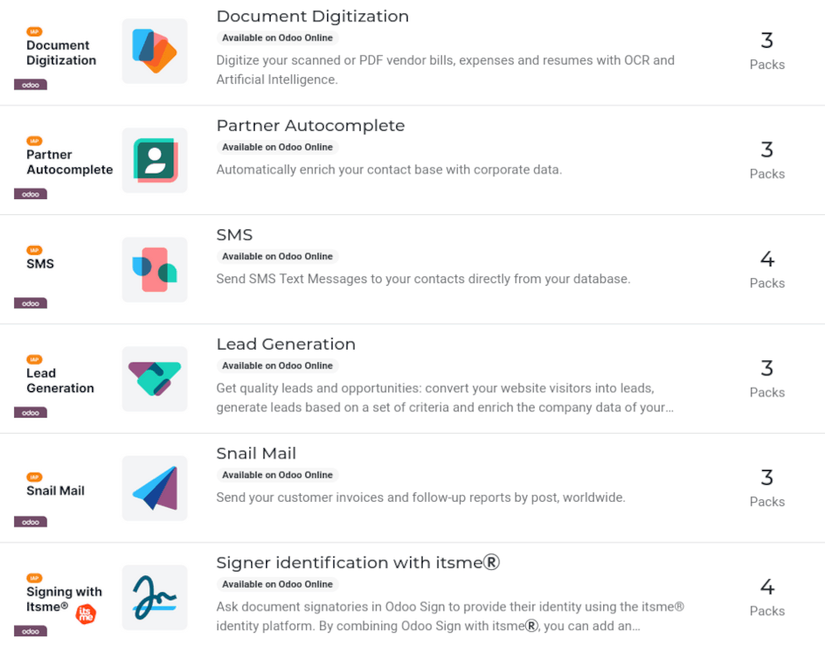
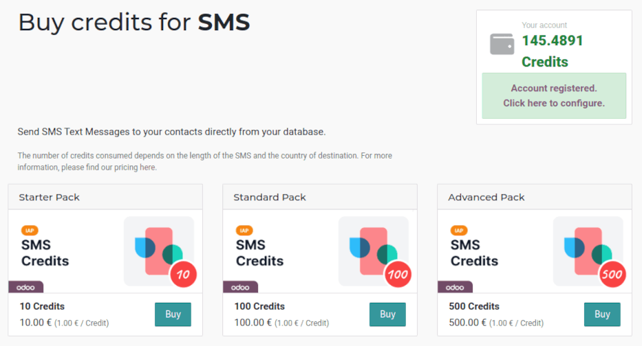

In-app purchases (IAP)¶
In-app purchases (IAP) are optional services that enhance Odoo databases. Each service provides its own specific features and functionality. A full list of services is available on the Odoo IAP Catalog.
Example
The SMS service sends text messages to contacts directly from the database, and the Documents Digitization service digitizes scanned or PDF vendor bills, expenses, and resumes with optical character recognition (OCR) and artificial intelligence (AI).
IAP services do not need to be configured or set up before use. Odoo users can simply click on the service in the app to activate it. However, each service requires its own prepaid credits, and when they run out, users must buy more in order to keep using it.
Note
Enterprise Odoo users with a valid subscription get free credits to test IAP features before deciding to purchase more credits for the database. This includes demo/training databases, educational databases, and one-app-free databases.
IAP services¶
IAP services are provided by Odoo, as well as third-parties, and have a wide range of uses.
The following IAP services are offered by Odoo:
Partner Autocomplete: automatically populates contact records with corporate data.
SMS: sends SMS text messages to contacts directly from the database.
Lead Generation: generates leads based on a set of criteria, and converts web visitors into quality leads and opportunities.
Snailmail: sends customer invoices and follow-up reports by post, worldwide.
For more information on every service currently available (offered from developers other than Odoo), visit the Odoo IAP Catalog.
Use IAP services¶
IAP services are automatically integrated with Odoo, and do not require users to configure any settings. To use a service, simply interact with it wherever it appears in the database.
Example
The following flow focuses on the SMS IAP service being used from a contact’s record.
This can be done by clicking the 📱 SMS icon within the database.

One way to utilize the SMS IAP service with Odoo is showcased in the following steps:
First, navigate to the , and click on a contact with a mobile phone number entered in either the Phone or Mobile field of the contact form.
Next, find the 📱 SMS icon that appears to the right of the Phone or Mobile fields. Click the 📱 SMS icon, and a Send SMS Text Message pop-up window appears.
Type a message in the Message field of the pop-up window. Then, click the Send SMS button. Odoo then sends the message, via SMS, to the contact, and logs what was sent in the chatter of the contact’s form.
Upon sending the SMS message, the prepaid credits for the SMS IAP service are automatically deducted from the existing credits. If there are not enough credits to send the message, Odoo prompts the user to purchase more.
See also
For more information on how to use various IAP services, and for more in-depth instructions related to SMS functionality in Odoo, review the documentation below:
IAP credits¶
Every time an IAP service is used, the prepaid credits for that service are spent. Odoo prompts the purchase of more credits when there are not enough credits left to continue using a service. Email alerts can also be set up for when credits are low.
Credits are purchased in Packs from the Odoo IAP Catalog, and pricing is specific to each service.
Example
The SMS service has four packs available, in denominations of:
Starter Pack: 10 credits
Standard Pack: 100 credits
Advanced Pack: 500 credits
Expert Pack: 1,000 credits
The number of credits consumed depends on the length of the SMS and the country of destination.
For more information, refer to the SMS Pricing and FAQ documentation.
Buy credits¶
If there are not enough credits to perform a task, the database automatically prompts the purchase of more credits.
Users can check the current balance of credits for each service, and manually purchase more credits, by navigating to the , and beneath the Odoo IAP setting, click View My Services.
Doing so reveals a My Services page, listing the various IAP services in the database. From here, click an IAP service to open its Account Information page, where additional credits can be purchased.
Manually buy credits¶
To manually buy credits in Odoo, follow these steps:
First, go to the and type IAP in the Search…
bar. Alternatively users can scroll down to the Contacts section. Under the
Contacts section, where it says Odoo IAP, click View My
Services.
Doing so reveals an IAP Account page, listing the various IAP services in the database. From here, click an IAP service to open details about it; additional credits can be purchased from here.
On the following page, click the Buy Credit button. Doing so loads a Buy Credits for (IAP Account) page in a new tab. From here, click Buy on the desired pack of credits. Then, follow the prompts to enter payment details, and confirm the order.
Once the transaction is complete, the credits are available for use in the database.
Low-credit notification¶
It is possible to be notified when credits are low, in order to avoid running out of credits, while using an IAP service. To do that, follow this process:
Go to the , and type IAP in the Search… bar.
Under the Contacts section, where it says Odoo IAP, click View My
Services.
The available IAP accounts appear in a list view on the IAP Account page. From here, click on the desired IAP account to view that service’s details.
On the details page, tick the Receive threshold warning checkbox. Doing so reveals two fields on the form: Warning Threshold and Contact Email.
In the Warning Threshold field, enter an amount of credits Odoo should use as the minimum threshold for this service. In the Contact Email field, enter the email address that receives the notification.
Odoo sends a low-credit alert to the Contact Email when the balance of credits falls below the amount listed as the Warning Threshold.